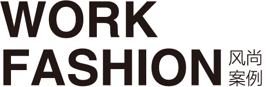

<div class="content mt300">
    <div class="headline"></div>
    <div class="tab-menu">
    	<ul class="clearfix">
            <li ng-class="{active:tabIndex==1}" ng-click="tab(1)"><span>风尚介绍</span></li>
            <li ng-class="{active:tabIndex==2}" class="tc" ng-click="tab(2)"><span>风尚团队</span></li>
            <li ng-class="{active:tabIndex==3}" class="tc" ng-click="tab(3)"><span>合作伙伴</span></li>
            <li ng-class="{active:tabIndex==4}" class="tr" ng-click="tab(4)"><span>人才招聘</span></li>
        </ul>
    </div>
    <div class="tab-content" ng-class="{active:tabIndex==1}">
        <p>{{details}}</p>
        <div class="fs-culture">
        	<div class="fs-title"><h3>风尚文化</h3></div>
        	<div class="fs-culture-content clearfix">
        	<dl class="fs-culture-item">
        		<dt>我们的价值观</dt>
        		<dd></dd>
        	</dl>
        	<dl class="fs-culture-item">
         		<dt>我们的愿景</dt>
        		<dd></dd>       		
        	</dl>
        	<dl class="fs-culture-item">
        		<dt>我们的使命</dt>
        		<dd></dd>        		
        	</dl>
        	</div>
        </div>
        <div class="fs-prod clearfix">
        		<div class="fs-title"><h3>风尚荣誉</h3></div>
        		<div class="fs-prod-item">
        		华润怡宝“百所图书馆”计划由INTERBRAND(全球最大的综合型品牌咨询公司)、
21世纪经济报道评选为“中国最佳品牌建设案例”

        	</div>
        	     <div class="fs-prod-item">
        		深圳西岸”城市营销获评“南方都市报系年度最佳创新案例”、“南方都市报十在营销事件提名奖”

        	</div>
        </div>
    </div>
    <div class="tab-content" ng-class="{active:tabIndex==2}">
    </div>
    <div class="tab-content" ng-class="{active:tabIndex==3}">
    </div>
    <div class="tab-content" ng-class="{active:tabIndex==4}">
    </div>
</div>
